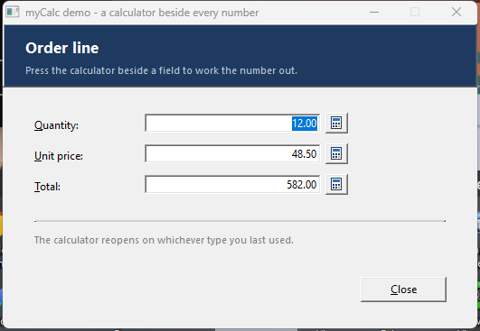
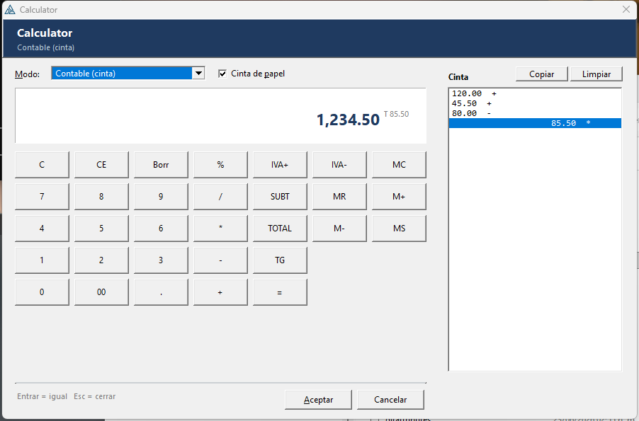
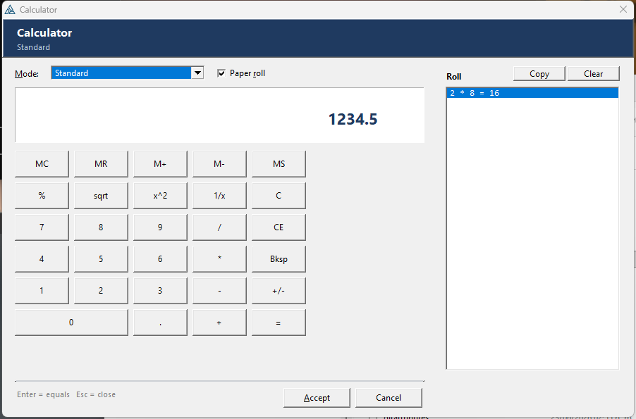
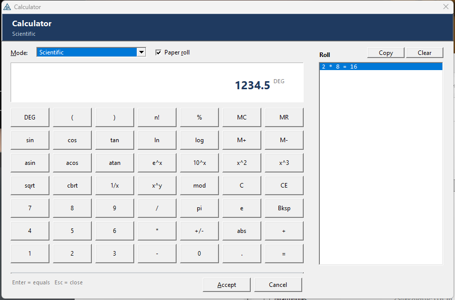
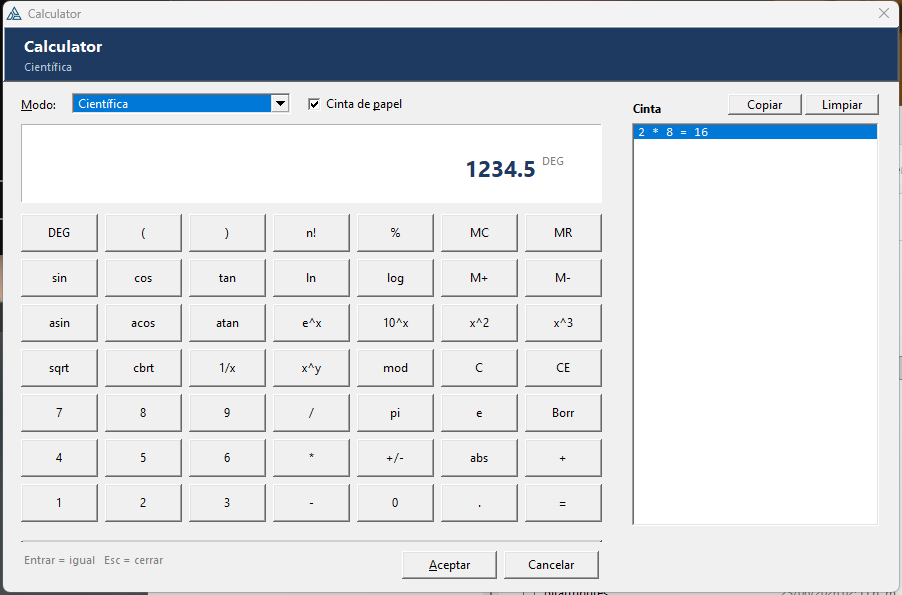
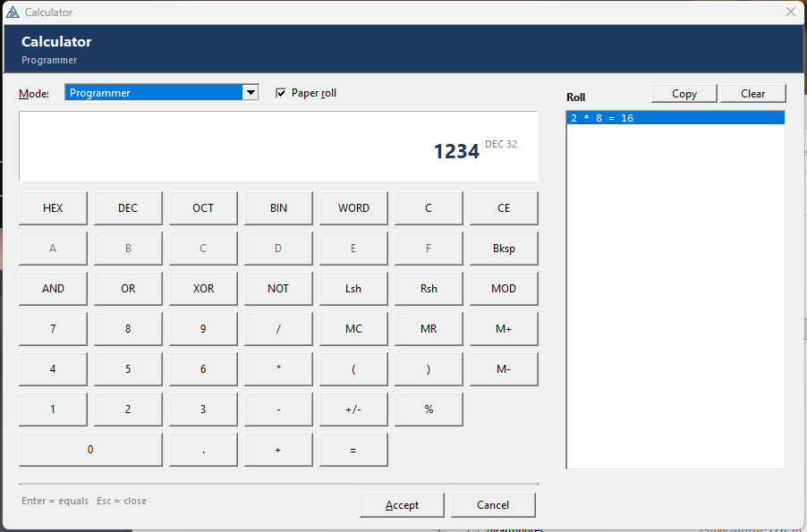
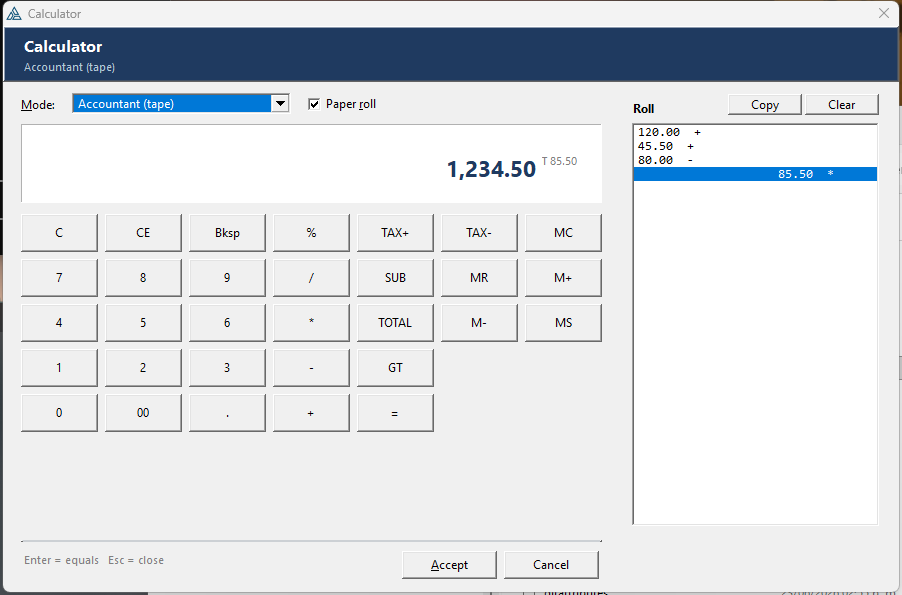

myCalc
A pop-up calculator beside any numeric field — standard, scientific, programmer and an accountant's tape, sharing one paper roll. Press Accept and the answer lands in the field. Pure Clarion, in English or Spanish.
Una calculadora emergente junto a cualquier campo numérico — estándar, científica, de programador y una cinta de contable, compartiendo una misma cinta de papel. Pulsa Aceptar y el resultado cae en el campo. Clarion puro, en inglés o español.
4 calculators · paper roll · remembers the mode · EN / ES · no dependencies 4 calculadoras · cinta de papel · recuerda el modo · EN / ES · sin dependenciasOverviewResumen #
Drag myCalc - Calculator button next to a numeric entry and point it at that entry. A small calculator icon appears beside the field; pressing it opens a modal calculator already holding whatever the field contains, and Accept puts the answer back.

Four calculators live in one window, chosen from a drop list, and they share one paper roll — the adding-machine tape in accountant mode, the history of finished calculations in the others.
| myCalc | |
|---|---|
| Needs a DLL / OCX / control | No — pure Clarion, nothing to deploy |
| Calculators | Standard, Scientific, Programmer, Accountant (tape) |
| Paper roll | Tape or history, copyable to the clipboard |
| Remembers | Which calculator you were last on, and its options, between runs |
| Languages | English and Spanish, set once for the whole application |
| Writes back | Straight into the field the button sits beside |
Arrastra myCalc - Calculator button junto a un campo numérico y apúntalo a ese campo. Aparece un pequeño icono de calculadora al lado; al pulsarlo se abre una calculadora modal que ya contiene lo que hubiera en el campo, y Aceptar devuelve el resultado.
Cuatro calculadoras viven en una sola ventana, elegidas de una lista desplegable, y comparten una misma cinta de papel: la cinta de sumadora en el modo contable, y el historial de cálculos terminados en los demás.
| myCalc | |
|---|---|
| ¿Necesita DLL / OCX / control? | No — Clarion puro, nada que instalar |
| Calculadoras | Estándar, Científica, Programador, Contable (cinta) |
| Cinta de papel | Cinta o historial, se copia al portapapeles |
| Recuerda | En qué calculadora estabas, y sus opciones, entre ejecuciones |
| Idiomas | Inglés y español, se fija una vez para toda la aplicación |
| Devuelve el valor | Directo al campo junto al que está el botón |
Install & registerInstalar y registrar #
- Copy
templates/myCalc/CalcClass.inc,CalcClass.clwandcalc16.icoto a folder on the Clarion redirection path (your app folder, or\clarion12\libsrc\win). The two source files must be ANSI with CRLF line endings. - Copy
templates/myCalc/myCalc.tplinto your template folder. - In the IDE: Setup ▸ Template Registry ▸ Register, pick
myCalc.tpl. - Open a window, and from the control-template list drag myCalc - Calculator button beside a numeric field next to the entry you want it to fill in.
- Set Field to calculate into to that entry. That is the only required prompt.
ICON() into the executable's own resources, so
calc16.ico needs to be findable when you build — there is nothing extra to ship
with the finished program.REQ(myCalcGlobal), so dropping it adds myCalc - Global
to the application automatically. That is where the class include and the
language setting live.CalcClass.inc the calculator: modes, actions, strings, prototypes
CalcClass.clw the implementation: keypad, arithmetic, window
calc16.ico the little calculator on the button
myCalc.tpl global extension + button control + code template
myCalc.zip the four files above, for distribution
examples/myCalc/
CalcDemo.clw / .cwproj a runnable demo — three fields, three buttons
- Copia
templates/myCalc/CalcClass.inc,CalcClass.clwycalc16.icoa una carpeta del camino de redirección de Clarion (la carpeta de tu app, o\clarion12\libsrc\win). Los dos archivos de código tienen que estar en ANSI y con finales de línea CRLF. - Copia
templates/myCalc/myCalc.tpla tu carpeta de plantillas. - En el IDE: Setup ▸ Template Registry ▸ Register, y elige
myCalc.tpl. - Abre una ventana y arrastra desde la lista de plantillas de control myCalc - Calculator button beside a numeric field junto al campo que quieras rellenar.
- Pon Field to calculate into apuntando a ese campo. Es el único prompt obligatorio.
ICON() en los recursos del propio ejecutable, así que
calc16.ico tiene que encontrarse al compilar — no hay nada extra que distribuir
con el programa terminado.REQ(myCalcGlobal), así que al soltarlo se añade
myCalc - Global a la aplicación automáticamente. Ahí viven el include de la clase y
la selección de idioma.CalcClass.inc la calculadora: modos, acciones, textos, prototipos
CalcClass.clw la implementación: teclado, aritmética, ventana
calc16.ico la calculadorita del botón
myCalc.tpl extensión global + control del botón + code template
myCalc.zip los cuatro archivos anteriores, para distribuir
examples/myCalc/
CalcDemo.clw / .cwproj demo que compila — tres campos, tres botones
Already have a button or menu?¿Ya tienes un botón o un menú? #
myCalcHere is a #CODE template with the same prompts. Drop it into the
Accepted embed of any existing button, menu item, toolbar entry or hot key. Instead of
pointing at a control it takes the variable or file field to fill in, and optionally a control
to refresh afterwards.
Use it when the calculator belongs on your Tools ▸ Calculator menu rather than on a button, or when the window has no room for another control.
myCalcHere es una plantilla #CODE con los mismos prompts. Suéltala en el embed
Accepted de cualquier botón, opción de menú, entrada de toolbar o tecla rápida que ya
tengas. En vez de apuntar a un control recibe la variable o campo de archivo que hay que
rellenar y, si quieres, un control que refrescar después.
Úsala cuando la calculadora pertenezca a tu menú Herramientas ▸ Calculadora en vez de a un botón, o cuando en la ventana no quepa otro control.
LanguageIdioma #
The calculator speaks English or Spanish. The setting lives on the myCalc - Global extension and is what every calculator in the application follows.
It changes the mode names, the window labels and the word keys. Digits, operators and the maths
names (sin, log, x^y, HEX…) read the same in both
languages, so they are deliberately left alone.
| English | Español |
|---|---|
| Standard / Scientific / Programmer / Accountant (tape) | Estándar / Científica / Programador / Contable (cinta) |
| Mode: · Paper roll · Roll · Copy · Clear | Modo: · Cinta de papel · Cinta · Copiar · Limpiar |
| Accept · Cancel | Aceptar · Cancelar |
| Bksp · SUB · TOTAL · GT · TAX+ · TAX- · WORD | Borr · SUBT · TOTAL · TG · IVA+ · IVA- · BITS |
| Enter = equals Esc = close | Entrar = igual Esc = cerrar |
| Cannot divide by zero · Invalid input | No se puede dividir entre cero · Entrada no válida |

The global extension publishes the choice as a real global variable, and each button reads it:
myCalcLanguage BYTE(2) ! from the global extension: 1 = EN, 2 = ES … Calc1.Language = myCalcLanguage ! what every calculator follows
A single button can opt out on its own Language tab — useful for one screen that must stay in one language — but leaving it on Use the application setting is the normal case.
La calculadora habla inglés o español. El ajuste vive en la extensión myCalc - Global y es el que sigue toda calculadora de la aplicación.
Cambia los nombres de los modos, las etiquetas de la ventana y las teclas con palabras. Los dígitos,
los operadores y los nombres matemáticos (sin, log, x^y,
HEX…) se leen igual en los dos idiomas, así que se dejan tal cual a propósito.
| English | Español |
|---|---|
| Standard / Scientific / Programmer / Accountant (tape) | Estándar / Científica / Programador / Contable (cinta) |
| Mode: · Paper roll · Roll · Copy · Clear | Modo: · Cinta de papel · Cinta · Copiar · Limpiar |
| Accept · Cancel | Aceptar · Cancelar |
| Bksp · SUB · TOTAL · GT · TAX+ · TAX- · WORD | Borr · SUBT · TOTAL · TG · IVA+ · IVA- · BITS |
| Enter = equals Esc = close | Entrar = igual Esc = cerrar |
| Cannot divide by zero · Invalid input | No se puede dividir entre cero · Entrada no válida |
La extensión global publica la elección como una variable global de verdad, y cada botón la lee:
myCalcLanguage BYTE(2) ! de la extensión global: 1 = EN, 2 = ES … Calc1.Language = myCalcLanguage ! lo que sigue toda calculadora
Un botón concreto puede desmarcarse en su propia pestaña Language — útil para una pantalla que deba quedarse en un idioma — pero lo normal es dejarlo en Use the application setting.
Remembering the last sessionRecordar la última sesión #
Whichever calculator the user was last on comes back the next time the program runs — not just the next time the window opens.
When the calculator closes, these are written to an INI section and read back next time:
- the calculator type (standard / scientific / programmer / accountant);
- whether the paper roll was showing;
- DEG/RAD, the number base, the word size, the decimals and the tax rate.
[myCalc_UpdateOrder] Mode=4 ShowTape=1 Angle=0 Base=10 WordBits=32 Decimals=2 TaxRate=16.00
The section is named from a Profile, which defaults to the procedure name — so the calculator
on your invoice form and the one on your stock form each remember their own. INI file defaults
to <your program>.INI beside the executable.
Persist = 0. ForgetSettings() wipes one profile so the next open starts
from the template's defaults again.La calculadora en la que el usuario estuvo por última vez vuelve la próxima vez que se ejecuta el programa, no solo la próxima vez que se abre la ventana.
Al cerrar la calculadora se escriben en una sección de un INI, y se releen la vez siguiente:
- el tipo de calculadora (estándar / científica / programador / contable);
- si la cinta de papel estaba visible;
- DEG/RAD, la base numérica, el tamaño de palabra, los decimales y el tipo de impuesto.
[myCalc_UpdateOrder] Mode=4 ShowTape=1 Angle=0 Base=10 WordBits=32 Decimals=2 TaxRate=16.00
La sección toma su nombre de un Profile, que por defecto es el del procedimiento — así que la
calculadora de tu formulario de facturas y la de tu formulario de existencias recuerdan cada una lo
suyo. INI file apunta por defecto a <tu programa>.INI, junto al ejecutable.
Persist = 0. ForgetSettings() borra un perfil para que la próxima apertura
vuelva a partir de los valores de la plantilla.StandardEstándar #
The everyday keypad: the four functions, percent, square root, x², 1/x, sign change, backspace, C / CE, and a full memory row (MC MR M+ M- MS). An M shows in the readout while memory holds something.
% follows the usual calculator convention: after + or - it is
a percentage of the running value, so 200 + 10 % = gives 220. Anywhere else
it simply divides by a hundred.

El teclado de todos los días: las cuatro operaciones, porcentaje, raíz cuadrada, x², 1/x, cambio de signo, retroceso, C / CE y una fila completa de memoria (MC MR M+ M- MS). Mientras la memoria guarda algo aparece una M en la pantalla.
% sigue la convención habitual: después de + o - es un
porcentaje del valor acumulado, así que 200 + 10 % = da 220. En cualquier
otro sitio simplemente divide entre cien.
ScientificCientífica #
Adds trigonometry (sin cos tan asin acos atan), logarithms (ln log e^x
10^x), powers and roots (x^2 x^3 x^y sqrt cbrt 1/x), n!,
abs, mod, the constants pi and e, and
parentheses nested up to sixteen deep.
The DEG key toggles degrees and radians, and the current state shows beside the readout so you can never be in the wrong one by accident.

Añade trigonometría (sin cos tan asin acos atan), logaritmos (ln log e^x
10^x), potencias y raíces (x^2 x^3 x^y sqrt cbrt 1/x), n!,
abs, mod, las constantes pi y e, y
paréntesis anidados hasta dieciséis niveles.
La tecla DEG alterna entre grados y radianes, y el estado actual se ve junto a la pantalla, así que nunca puedes estar en el equivocado sin darte cuenta.

ProgrammerProgramador #
Works in HEX, DEC, OCT or BIN — switching base converts the value in place, and the digits the base has no use for are greyed out rather than hidden, so the keypad never moves under your fingers.
Bitwise AND OR XOR NOT, Lsh / Rsh shifts and MOD,
with a WORD key cycling 8 / 16 / 32 bits. Every result is masked to the word size, so
NOT 0 at 8 bits gives 255, not −1. The base and word size show beside the
readout.

Trabaja en HEX, DEC, OCT o BIN — al cambiar de base el valor se convierte en el sitio, y los dígitos que esa base no usa se desactivan en gris en vez de esconderse, así que el teclado nunca se mueve bajo tus dedos.
Operaciones de bits AND OR XOR NOT, desplazamientos Lsh / Rsh
y MOD, con una tecla BITS que va rotando 8 / 16 / 32 bits. Cada resultado se
enmascara al tamaño de palabra, así que NOT 0 con 8 bits da 255, no −1. La base y
el tamaño de palabra se ven junto a la pantalla.
Accountant — the adding-machine tapeContable — la cinta de sumadora #
A real adding machine. You type a number and press + or -,
which posts it to the roll and updates the running total — it does not wait for
=.
| Key | What it does |
|---|---|
+ / - | Post the entry to the roll and add / subtract it from the running total. |
SUB | Print a subtotal line and keep going. |
TOTAL | Print the total, add it to the grand total and start a fresh run. |
GT | Print the grand total of all the totals so far, and reset it. |
TAX+ / TAX- | Add tax to the entry, or back it out of a gross figure, at the configured rate. |
00 | The adding-machine double zero. |
* / / | Work on the entry as usual, so you can multiply before posting. |
The running total shows beside the readout as T …, and the roll prints each posting
with its sign, subtotals with * and totals with T — the way a paper tape
does.

Una sumadora de verdad. Escribes un número y pulsas + o -, y
eso lo anota en la cinta y actualiza el total acumulado — no espera a que pulses
=.
| Tecla | Qué hace |
|---|---|
+ / - | Anota la entrada en la cinta y la suma o resta del total acumulado. |
SUBT | Imprime una línea de subtotal y sigue. |
TOTAL | Imprime el total, lo suma al total general y empieza una tanda nueva. |
TG | Imprime el total general de todos los totales hasta ahora, y lo reinicia. |
IVA+ / IVA- | Añade el impuesto a la entrada, o lo saca de una cifra bruta, al tipo configurado. |
00 | El doble cero de las sumadoras. |
* / / | Actúan sobre la entrada como siempre, para poder multiplicar antes de anotar. |
El total acumulado se ve junto a la pantalla como T …, y la cinta imprime cada
anotación con su signo, los subtotales con * y los totales con T, como hace
una cinta de papel.
The paper rollLa cinta de papel #
The roll down the right-hand side is shared by all four calculators:
- in accountant mode it is the tape — every posting, subtotal and total;
- in the others it is the history: each finished calculation is printed as
2 * 8 = 16, and so is each one-key function such assqrt(9) = 3.
Copy puts the whole roll on the clipboard as plain text — ready to paste into a note, an e-mail or a spreadsheet. Clear starts a fresh sheet. The roll keeps the most recent 500 lines and always scrolls to the newest.
The Paper roll tick box slides it in and out; the window narrows when it is hidden, and the state is remembered with the rest of the settings.
La cinta de la derecha la comparten las cuatro calculadoras:
- en modo contable es la cinta de la sumadora: cada anotación, subtotal y total;
- en los demás es el historial: cada cálculo terminado se imprime como
2 * 8 = 16, igual que cada función de una tecla, por ejemplosqrt(9) = 3.
Copiar pone toda la cinta en el portapapeles como texto plano, lista para pegar en una nota, un correo o una hoja de cálculo. Limpiar empieza una hoja nueva. La cinta guarda las últimas 500 líneas y siempre baja hasta la más reciente.
La casilla Cinta de papel la muestra u oculta; la ventana se estrecha cuando está oculta, y ese estado se recuerda junto con el resto de los ajustes.
KeyboardTeclado #
The calculator works from the keyboard as well as the mouse:
| Key | Does |
|---|---|
| 0–9 (top row or numeric keypad) | Type a digit. |
| . (either) | Decimal point. |
| + − * / (numeric keypad) | The four operators. |
| Enter or = | Equals — in accountant mode, prints the total. |
| Backspace | Rub out the last digit. |
| Delete | Clear the entry (CE). |
| Esc | Close without accepting. |
| Alt+A | Accept — put the value into the field. |
La calculadora funciona con el teclado además de con el ratón:
| Tecla | Hace |
|---|---|
| 0–9 (fila superior o teclado numérico) | Escribe un dígito. |
| . (cualquiera) | Punto decimal. |
| + − * / (teclado numérico) | Los cuatro operadores. |
| Entrar o = | Igual — en modo contable, imprime el total. |
| Retroceso | Borra el último dígito. |
| Supr | Limpia la entrada (CE). |
| Esc | Cierra sin aceptar. |
| Alt+A | Aceptar — pone el valor en el campo. |
Class referenceReferencia de la clase #
Opening it
| Method | Returns | Meaning |
|---|---|---|
AskFor(*? pField) | BYTE | Seed from a numeric variable or file field, open the calculator, and write the answer back if the user accepts. 1 = accepted. |
Ask() | BYTE | Just open it. The answer is in Value. VIRTUAL — override for your own window. |
Press(action, text) | — | Press one key from code. Every button goes through this, so the whole calculator can be driven or tested without a window. |
SetValue(v) / Current() | — / REAL | Load the readout / read what it holds. |
Reset() | — | Clear everything except memory. |
Settings
| Property | Default | Meaning |
|---|---|---|
Mode | Calc:Standard | Which calculator opens. |
Allow | 15 | Bit mask of offered modes — Calc:AllowStandard … Calc:AllowAll. |
Value | 0 | The seed on the way in, the answer on the way out. |
Title | blank | Header text; blank uses the localised name. |
Language | Calc:English | Calc:English / Calc:Spanish. |
Decimals | 2 | Decimals on the tape readout. |
TaxRate | 16 | Percent, for TAX+ / TAX-. |
Angle | 0 | 0 = degrees, 1 = radians. |
Base / WordBits | 10 / 32 | Programmer base and word size. |
ShowTape | 1 | Paper roll visible. |
Persist / Profile / IniFile | 0 / blank / blank | See Remembering the last session. |
Accepted | — | 1 after the user pressed Accept. |
The paper roll
AddTape(line, value, kind) | Print your own line on the roll. |
TapeLines() / TapeLine(n) | How many lines, and line n. |
TapeText() | The whole roll as CR/LF text — what Copy puts on the clipboard. |
ClearTape() | Start a fresh sheet. |
Remembering
LoadSettings() | Restore now — Ask() calls it the first time. |
SaveSettings() | Save now — closing the window does it for you. |
ForgetSettings() | Wipe this profile. |
Abrirla
| Método | Devuelve | Significado |
|---|---|---|
AskFor(*? pField) | BYTE | Toma el valor de una variable o campo numérico, abre la calculadora y devuelve el resultado al campo si el usuario acepta. 1 = aceptado. |
Ask() | BYTE | Solo abrirla. El resultado queda en Value. Es VIRTUAL — redefínela para tu propia ventana. |
Press(action, text) | — | Pulsa una tecla desde código. Todos los botones pasan por aquí, así que la calculadora entera se puede manejar o probar sin ventana. |
SetValue(v) / Current() | — / REAL | Cargar la pantalla / leer lo que tiene. |
Reset() | — | Limpia todo menos la memoria. |
Ajustes
| Propiedad | Por defecto | Significado |
|---|---|---|
Mode | Calc:Standard | Con qué calculadora se abre. |
Allow | 15 | Máscara de modos ofrecidos — Calc:AllowStandard … Calc:AllowAll. |
Value | 0 | El valor de entrada, y el resultado a la salida. |
Title | vacío | Texto de la cabecera; en blanco usa el nombre traducido. |
Language | Calc:English | Calc:English / Calc:Spanish. |
Decimals | 2 | Decimales en la lectura de la cinta. |
TaxRate | 16 | Porcentaje, para IVA+ / IVA-. |
Angle | 0 | 0 = grados, 1 = radianes. |
Base / WordBits | 10 / 32 | Base y tamaño de palabra del modo programador. |
ShowTape | 1 | Cinta de papel visible. |
Persist / Profile / IniFile | 0 / vacío / vacío | Ver Recordar la última sesión. |
Accepted | — | 1 después de que el usuario pulse Aceptar. |
La cinta de papel
AddTape(line, value, kind) | Imprime tu propia línea en la cinta. |
TapeLines() / TapeLine(n) | Cuántas líneas hay, y la línea n. |
TapeText() | Toda la cinta como texto CR/LF — lo que Copiar pone en el portapapeles. |
ClearTape() | Empezar una hoja nueva. |
Recordar
LoadSettings() | Restaurar ahora — Ask() lo llama la primera vez. |
SaveSettings() | Guardar ahora — cerrar la ventana ya lo hace. |
ForgetSettings() | Borra este perfil. |
Driving it from codeDesde tu propio código #
You do not need the template — the class works on its own:
Calc1 CalcClass CODE IF Calc1.AskFor(LOC:Total) ! seed, ask, write back DISPLAY(?LOC:Total) END
Open it on a particular calculator, in a particular language, with no drop list at all:
Calc1.Allow = Calc:AllowAccountant ! only the tape, so no mode list Calc1.Language = Calc:Spanish Calc1.Decimals = 2 Calc1.TaxRate = 21 IF Calc1.Ask() THEN total = Calc1.Value .
Drive the keys from code — this is exactly how the arithmetic is tested, with no window open:
Calc1.Press(Act:ClearAll,'') Calc1.Press(Act:Digit,'2') Calc1.Press(Act:Mul,'*') Calc1.Press(Act:Digit,'8') Calc1.Press(Act:Equals,'=') Message(Calc1.DisplayText()) ! 16
And print your own lines onto the roll — handy for showing where a figure came from:
Calc1.AddTape('invoice 1042', 0, 1) Calc1.SetValue(ORD:Total) IF Calc1.Ask() THEN ORD:Total = Calc1.Value .
No necesitas la plantilla — la clase funciona por su cuenta:
Calc1 CalcClass CODE IF Calc1.AskFor(LOC:Total) ! tomar, preguntar, devolver DISPLAY(?LOC:Total) END
Ábrela en una calculadora concreta, en un idioma concreto y sin lista de modos:
Calc1.Allow = Calc:AllowAccountant ! solo la cinta, así no hay lista Calc1.Language = Calc:Spanish Calc1.Decimals = 2 Calc1.TaxRate = 21 IF Calc1.Ask() THEN total = Calc1.Value .
Maneja las teclas desde código — así es exactamente como se prueba la aritmética, sin abrir ventana:
Calc1.Press(Act:ClearAll,'') Calc1.Press(Act:Digit,'2') Calc1.Press(Act:Mul,'*') Calc1.Press(Act:Digit,'8') Calc1.Press(Act:Equals,'=') Message(Calc1.DisplayText()) ! 16
Y escribe tus propias líneas en la cinta, útil para dejar constancia de dónde salió una cifra:
Calc1.AddTape('factura 1042', 0, 1) Calc1.SetValue(ORD:Total) IF Calc1.Ask() THEN ORD:Total = Calc1.Value .
Clarion notesNotas de Clarion #
Three Clarion behaviours bit this template during construction. They are commented at the places they matter, and they are worth knowing in any Clarion code that formats numbers.
@N pictures always group
FORMAT(1024,@n24.10) returns 1,024.0000000000 — and so does
@n-24.10. There is no spelling that turns the grouping off. For a plain, ungrouped number
use Clarion's own numeric → string conversion instead: assigning a REAL to a CSTRING gives
1024, 2.5, -7.25, which is exactly what a readout wants.DEFORMAT with a picture eats the decimal point
DEFORMAT('116.00',@n-24.10) returns 11600 — it reads the
. as the thousands separator. Picture-less DEFORMAT('116.00') returns
116.00 correctly, keeps the sign and still strips grouping commas. For reading a number back, omit the
picture.< opens an escape sequence in a string literal
'<<' renders as a single <, because that is the escaped form of one.
A shift key labelled '<<' therefore showed <. The keys are labelled
Lsh and Rsh instead.Two smaller ones. HTML entities mean nothing in a Clarion window — √ displays
literally — and the symbols √ ² ³ are not in the Windows-1252 code page either, so the keys read
sqrt, x^2, x^3, cbrt. And Clarion's own shipped
MiniCalc.ico is white-on-transparent, made for a dark toolbar; on an ordinary grey button
it is invisible, which is why this template brings its own calc16.ico.
How the keypad is built
The window holds a fixed 7 × 7 grid of buttons, ?B1…?B49, declared
consecutively. Because Clarion numbers field equates in declaration order,
FIELD() - ?B1 + 1 is the cell number — one handler for the whole keypad instead of a
49-way CASE. Each mode fills a small table of label + action, and cells it does not use
are hidden. Every key then goes through one Press(action, text) method, which is why the
calculator can be exercised headlessly.
Tres comportamientos de Clarion mordieron a esta plantilla mientras se construía. Están comentados en los sitios donde importan, y conviene conocerlos en cualquier código Clarion que dé formato a números.
@N siempre agrupan
FORMAT(1024,@n24.10) devuelve 1,024.0000000000, y @n-24.10
también. No hay forma de escribirla que quite la agrupación. Para un número plano y sin agrupar usa la
conversión numérico → cadena del propio Clarion: asignar un REAL a un CSTRING da 1024,
2.5, -7.25, que es justo lo que quiere una pantalla.DEFORMAT con imagen se come el punto decimal
DEFORMAT('116.00',@n-24.10) devuelve 11600: lee el . como
separador de miles. Sin imagen, DEFORMAT('116.00') devuelve 116.00 correctamente,
conserva el signo y aun así quita las comas de agrupación. Para releer un número, omite la imagen.< abre una secuencia de escape en una cadena
'<<' se muestra como un solo <, porque esa es su forma escapada. Una
tecla de desplazamiento etiquetada '<<' mostraba <. Por eso las
teclas se llaman Lsh y Rsh.Dos más pequeños. Las entidades HTML no significan nada en una ventana Clarion —
√ se muestra literal — y los símbolos √ ² ³ tampoco están en la página de
códigos Windows-1252, así que las teclas dicen sqrt, x^2, x^3,
cbrt. Y el MiniCalc.ico que trae Clarion es blanco sobre transparente, hecho
para una barra oscura; sobre un botón gris normal es invisible, y por eso esta plantilla trae su propio
calc16.ico.
Cómo está hecho el teclado
La ventana lleva una rejilla fija de 7 × 7 botones, ?B1…?B49, declarados
de forma consecutiva. Como Clarion numera los field equates en el orden de declaración,
FIELD() - ?B1 + 1 es el número de celda: un solo manejador para todo el teclado en vez de
un CASE de 49 ramas. Cada modo llena una tablita de etiqueta + acción, y las celdas que no
usa se ocultan. Después, cada tecla pasa por un único método Press(action, text), que es
justo lo que permite ejercitar la calculadora sin ventana.
TroubleshootingSolución de problemas #
| Symptom | Cause / fix |
|---|---|
Illegal data type: CALCCLASS | CalcClass.inc has LF-only line endings, or is UTF-8. Save it as ANSI with CRLF. |
| The button shows no icon | calc16.ico was not on the redirection path when you built. Copy it beside the class files and rebuild. |
| Setting the language has no effect | The button may be overriding it on its own Language tab — set that back to Use the application setting. (Older builds also saved the language; that was a bug and is fixed.) |
| It opens on the wrong calculator | It is remembering the last one used. Change it in the drop list, or set Persist = 0 to always open on the template's mode. |
| Two fields share their settings | They are using the same Profile. Give each its own, or leave the prompt blank to get the procedure name. |
| The decimal key does nothing | You are in programmer mode on a base other than 10, where fractions have no meaning. It is disabled on purpose. |
Unknown identifier: myCalcLanguage | The myCalc - Global extension is missing. Add it — the button normally brings it in automatically. |
| Accept does nothing | The readout is showing an error. Press C first — the popup says so. |
| Síntoma | Causa / solución |
|---|---|
Illegal data type: CALCCLASS | CalcClass.inc tiene finales de línea solo LF, o está en UTF-8. Guárdalo en ANSI con CRLF. |
| El botón no muestra icono | calc16.ico no estaba en el camino de redirección al compilar. Cópialo junto a los archivos de la clase y vuelve a compilar. |
| Cambiar el idioma no hace nada | Puede que el botón lo esté anulando en su pestaña Language: vuelve a ponerlo en Use the application setting. (Las versiones antiguas además guardaban el idioma; eso era un error y ya está corregido.) |
| Se abre con la calculadora equivocada | Está recordando la última usada. Cámbiala en la lista, o pon Persist = 0 para abrir siempre con el modo de la plantilla. |
| Dos campos comparten los ajustes | Están usando el mismo Profile. Dale uno propio a cada uno, o deja el prompt en blanco para que tome el nombre del procedimiento. |
| La tecla del punto decimal no hace nada | Estás en modo programador con una base distinta de 10, donde los decimales no tienen sentido. Está desactivada a propósito. |
Unknown identifier: myCalcLanguage | Falta la extensión myCalc - Global. Agrégala — normalmente el botón la trae solo. |
| Aceptar no hace nada | La pantalla muestra un error. Pulsa C primero — el aviso lo dice. |